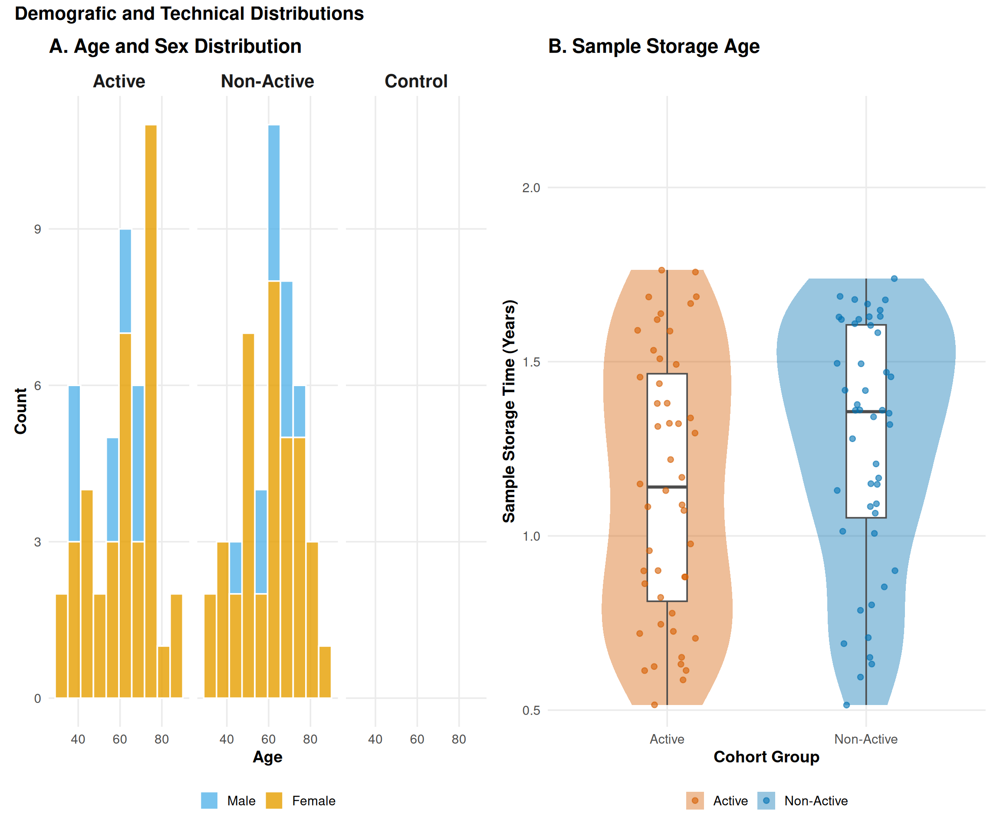
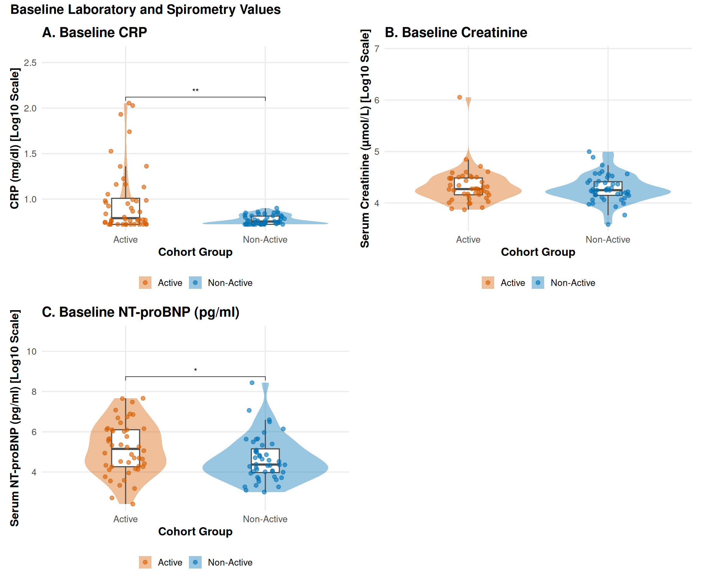
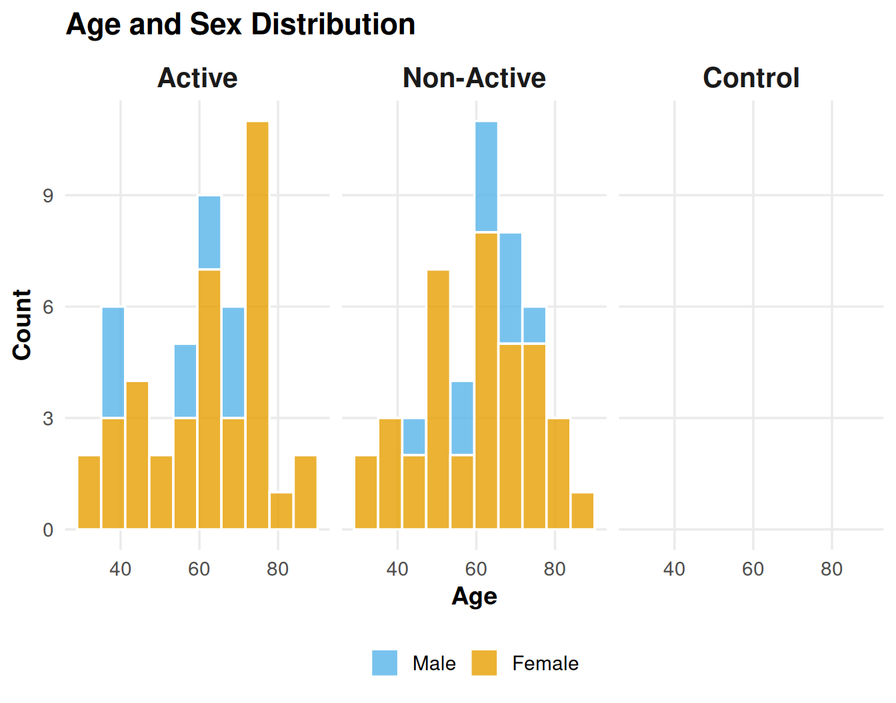
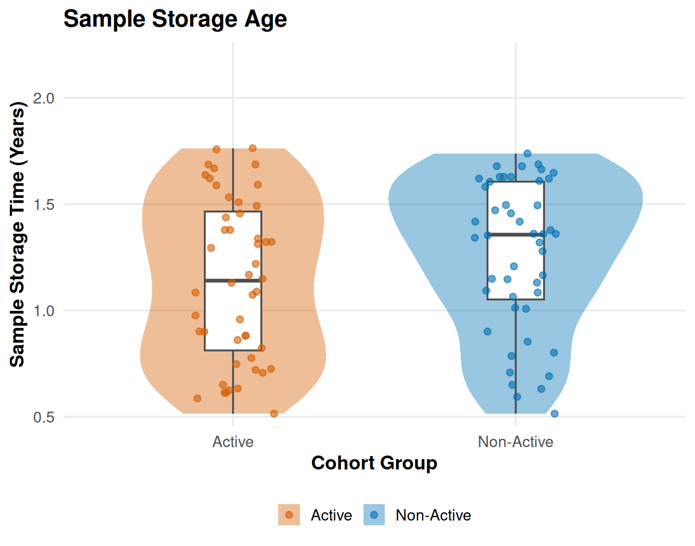
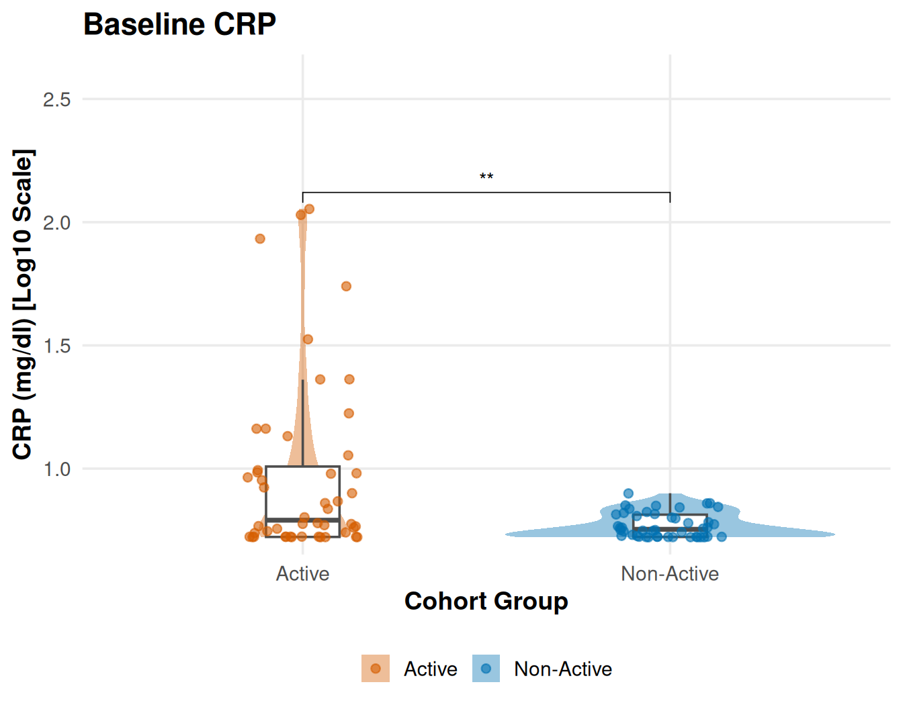
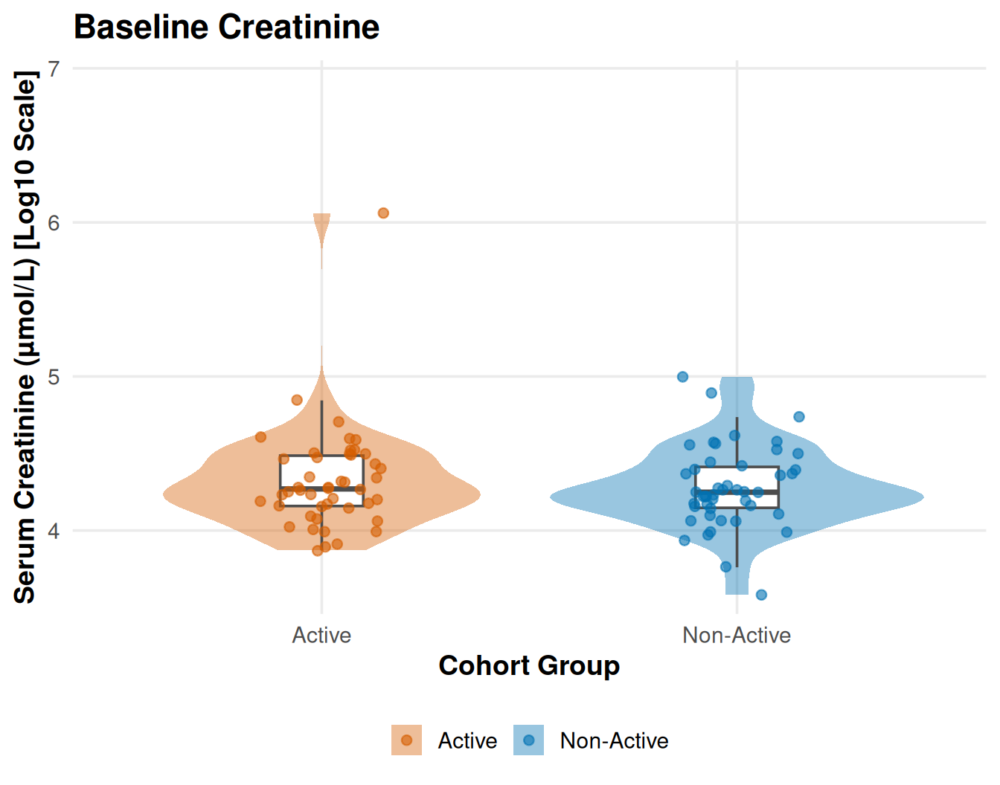
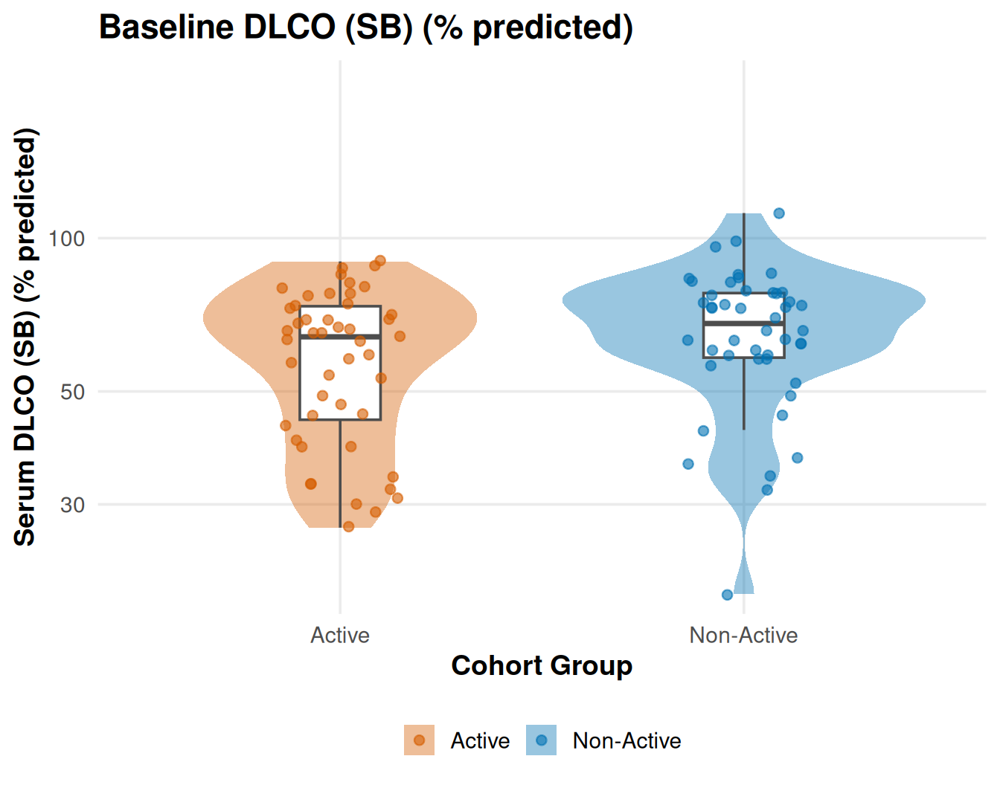
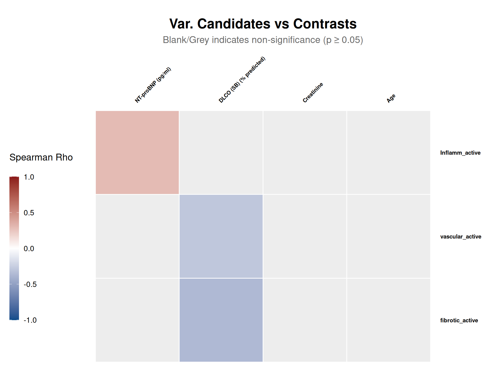
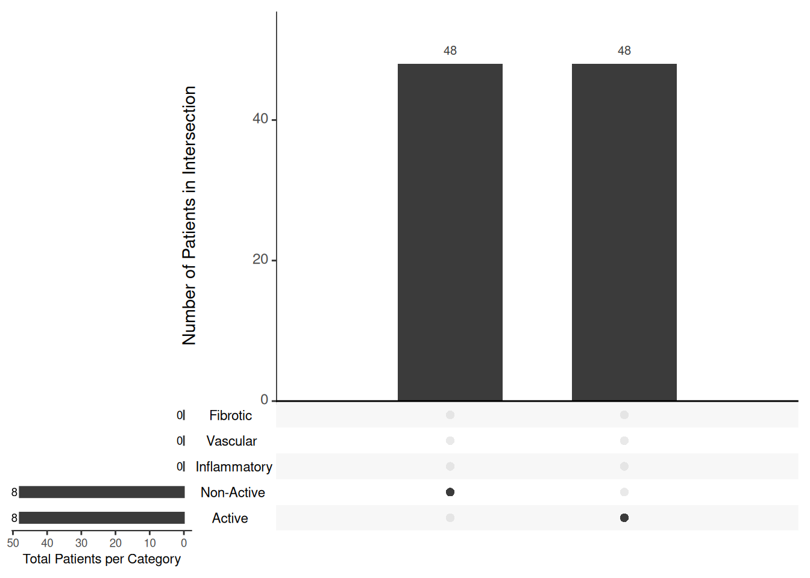

Last updated: 2026-04-17
Checks: 7 0
Knit directory: SSc-USZ/
This reproducible R Markdown analysis was created with workflowr (version 1.7.2). The Checks tab describes the reproducibility checks that were applied when the results were created. The Past versions tab lists the development history.
Great! Since the R Markdown file has been committed to the Git repository, you know the exact version of the code that produced these results.
Great job! The global environment was empty. Objects defined in the global environment can affect the analysis in your R Markdown file in unknown ways. For reproduciblity it’s best to always run the code in an empty environment.
The command set.seed(20260331) was run prior to running
the code in the R Markdown file. Setting a seed ensures that any results
that rely on randomness, e.g. subsampling or permutations, are
reproducible.
Great job! Recording the operating system, R version, and package versions is critical for reproducibility.
Nice! There were no cached chunks for this analysis, so you can be confident that you successfully produced the results during this run.
Great job! Using relative paths to the files within your workflowr project makes it easier to run your code on other machines.
Great! You are using Git for version control. Tracking code development and connecting the code version to the results is critical for reproducibility.
The results in this page were generated with repository version 518df84. See the Past versions tab to see a history of the changes made to the R Markdown and HTML files.
Note that you need to be careful to ensure that all relevant files for
the analysis have been committed to Git prior to generating the results
(you can use wflow_publish or
wflow_git_commit). workflowr only checks the R Markdown
file, but you know if there are other scripts or data files that it
depends on. Below is the status of the Git repository when the results
were generated:
Ignored files:
Ignored: .Rhistory
Ignored: .Rproj.user/
Ignored: output/01_data_import_and_qc/
Ignored: output/02_cohort_characterization/
Ignored: output/03a_proteomics_global/
Ignored: output/03a_proteomics_variance/
Ignored: output/03b_proteomics_differential/
Ignored: output/03c_proteomics_predictive/
Ignored: output/randomizer/
Ignored: renv/library/
Ignored: renv/staging/
Untracked files:
Untracked: code/randomizer.R
Untracked: core
Unstaged changes:
Modified: analysis/01_data_import_and_qc.Rmd
Modified: analysis/03a_proteomics_variance.Rmd
Modified: analysis/03b_proteomics_differential.Rmd
Modified: analysis/index.Rmd
Modified: analysis/style.css
Modified: code/00_config.R
Modified: code/00_omics_engines.R
Note that any generated files, e.g. HTML, png, CSS, etc., are not included in this status report because it is ok for generated content to have uncommitted changes.
These are the previous versions of the repository in which changes were
made to the R Markdown
(analysis/02_cohort_characterization.Rmd) and HTML
(docs/02_cohort_characterization.html) files. If you’ve
configured a remote Git repository (see ?wflow_git_remote),
click on the hyperlinks in the table below to view the files as they
were in that past version.
| File | Version | Author | Date | Message |
|---|---|---|---|---|
| Rmd | 518df84 | alexander-gysin | 2026-04-17 | third try at the heatmap dropdowns |
| html | 15d6fba | alexander-gysin | 2026-04-17 | Build site. |
| Rmd | 85ee23f | alexander-gysin | 2026-04-17 | second try at the heatmaps |
| html | 5d831d2 | alexander-gysin | 2026-04-17 | Build site. |
| Rmd | e8d13b6 | alexander-gysin | 2026-04-17 | tried to implement heatmap dropdowns |
| html | 5b3c1ae | alexander-gysin | 2026-04-16 | Build site. |
| Rmd | 14a794a | alexander-gysin | 2026-04-16 | wflow_publish("analysis/02_cohort_characterization.Rmd") |
| html | e2e9240 | alexander-gysin | 2026-04-16 | Build site. |
| Rmd | af32618 | alexander-gysin | 2026-04-16 | wflow_publish("analysis/02_cohort_characterization.Rmd") |
| html | 2909df1 | alexander-gysin | 2026-04-16 | Build site. |
| Rmd | 2425ca2 | alexander-gysin | 2026-04-16 | wflow_git_commit(all = TRUE) |
| html | 7d14932 | alexander-gysin | 2026-04-14 | Build site. |
| Rmd | bcd3e8f | alexander-gysin | 2026-04-14 | wflow_publish(files = c("analysis/01_data_import_and_qc.Rmd", |
| html | 03f21b0 | alexander-gysin | 2026-04-13 | Build site. |
| Rmd | 1b7fa5d | alexander-gysin | 2026-04-13 | audit complete, needs some more work on the heatmaps |
| html | 2e39eed | alexander-gysin | 2026-04-10 | Build site. |
| Rmd | e7fad4e | alexander-gysin | 2026-04-10 | wflow_publish("analysis/*.Rmd") |
| Rmd | 083bc85 | alexander-gysin | 2026-04-09 | meta data type, VPA, split the scripts to abcd |
| Rmd | 6324786 | alexander-gysin | 2026-04-07 | migrated back to SC |
| Rmd | 76c931b | alexander-gysin | 2026-04-07 | wflow_git_commit(all = TRUE) |
| html | 76c931b | alexander-gysin | 2026-04-07 | wflow_git_commit(all = TRUE) |
| html | ec8f4ac | alexander-gysin | 2026-04-05 | Build site. |
| html | c18fa49 | alexander-gysin | 2026-04-03 | Build site. |
| Rmd | 1208116 | alexander-gysin | 2026-04-03 | finished characterization |
Introduction
This script describes the cohors by showing the distributions of technical and clinical parameters.
Setup and Data Import
- Loaded required utility packages (tidyverse, gtsummary, corrplot, heatmaply, etc.).
- Created dynamic output directories to safely store Script 02 results and figures.
- Sourced global configurations and loaded the clinical spine generated previously.
library(tidyverse)
library(data.table)
library(lubridate)
library(gtsummary)
library(here)
library(patchwork)
library(ggpubr)
library(gt)
library(kableExtra)
library(corrplot)
library(heatmaply)
library(UpSetR)
# Knitr Config
knitr::opts_chunk$set(
warning = FALSE,
message = FALSE,
collapse = TRUE # Helps prevent code chunk fragmentation
)
# Output paths
current_file <- "02_cohort_characterization"
output_dir_data <- here::here("output", current_file)
if (!dir.exists(output_dir_data)) dir.create(output_dir_data, recursive = TRUE)
# Public Asset Paths (Pushed to GitHub for the Website)
public_heatmap_dir <- here::here("docs", "assets", "02_cohort_characterization", "heatmaps")
if (!dir.exists(file.path(public_heatmap_dir, "intra"))) dir.create(file.path(public_heatmap_dir, "intra"), recursive = TRUE)
if (!dir.exists(file.path(public_heatmap_dir, "inter"))) dir.create(file.path(public_heatmap_dir, "inter"), recursive = TRUE)
# Input paths (Parameterized)
input_paths <- list(
clinical_spine = here::here("output", "01_data_import_and_qc", "clinical_spine.rds")
)
# Load the clinical spine from Script 01
master_spine <- readRDS(input_paths$clinical_spine)Configuration
- Defined statistical thresholds for normality (Shapiro-Wilk) and variance (Bartlett) testing.
- Configured correlation matrix parameters including sparsity filters, significance limits, and targeted anchor variables.
- Constructed dynamic configuration lists to dictate Table 1 and Figure layouts using the pre-engineered master_spine.
# 1. Global Variables & Feature Engineering ------------------------------------
stat_config <- list(
shapiro_alpha = 0.05,
variance_alpha = 0.05,
p_cutoff = 0.05
)
corr_config <- list(
min_required_obs = 10,
p_cutoff = 0.05,
strong_rho_cutoff = 0.7,
label_font_size = 0.7 # Parameterized heatmap label size
)
candidate_vars <- list(
set1 = c("Creatinine", "NT-proBNP (pg/ml)", "Age", "DLCO (SB) (% predicted)")
)
# 2. Clinical Domains ----------------------------------------------------------
clinical_domains <- list(
Demographics_and_Scores = c(
"Age", "Sex", "Sample_Age", "cohort_group", "Total Score",
"eustarAI", "ACTIVE_AI", "Active_our", "Inflamm_active", "fibrotic_active", "vascular_active"
),
Cutaneous_and_Vascular = c(
"Subset_Diffuse", "Subset_Limited", "Subset_Sine",
"Modified rodnan skin score", "mRSS_a", "mRSS Worsening (1yr)",
"Raynaud phenomenon", "Score : Raynaud phenomenon", "Raynaud's present", "Raynaud VAS",
"Digital Tip Ulcers", "Digital ulcer", "Fingertip pitting scars", "Pitting scars on finger tips",
"Telangiectasia", "Telangiectasia (any)", "Abnormal Capillaroscopy", "Capillaroscopy Score",
"Capillaroscopy Pattern", "Giant capillaries", "Hemorrhages", "Capillary loss", "Ramified bushy capillaries",
"Puffy Fingers", "Sclerodactyly", "Skin Thickening (Ext. MCP)", "Skin Thickening (Prox. MCP)",
"Subcutaneous Calcinosis", "Gangrene"
),
Musculoskeletal = c(
"Joint involvement", "Joint Contractures", "Tendon friction rubs",
"Proximal muscle weakness", "Myalgia", "Muscle atrophy", "Arthritis Activity (NA)"
),
Pulmonary = c(
"PAH/ILD", "ILD diagnosed via HRCT", "FVC %pred", "Forced Vital Capacity (ml)",
"DLCO (SB) (% predicted)", "DLCO/VA (% predicted)", "TLC %pred",
"O2-saturation at rest (%)", "Min SpO2 (Exercise)",
"Dyspnea NYHA Stage", "Max Borg Dyspnea", "Distance in m", "New PAH"
),
Cardiac = c(
"New Cardiac Manifest.", "Does the patient have pulmonary arterial hypertension since the last visit?",
"Right bundle branch block", "Right axis deviation", "Right ventricular hypertrophy",
"Ventricular arrhythmias", "Auricular arrhythmias", "Conduction blocks", "Arrhythmias requiring therapy",
"Right atrium area (cm2)", "Right ventricular area (cm2)", "TAPSE (cm)",
"Pericardial effusion on echo", "PAPsys (on echo)?", "Diastolic Dysf. (Echo)", "LVEF %"
),
Gastrointestinal = c(
"Stomach Symptoms", "GAVE", "Intestinal Symptoms", "Malabsorption syndrome", "Proximal Dysphagia"
),
Labs_and_Biomarkers = c(
"CRP", "Creatinine", "NT-proBNP (pg/ml)", "Uric Acid (mg/dl)",
"Hemoglobin (g/dl)", "CK value in serum (U/U/L)", "Proteinuria (>300mg/d)",
"SSc Antibodies", "SSc Antibody Score"
)
)
# Helper function to determine parametric status (Kept local as requested)
check_parametric <- function(df, var_col, group_col, config, transform = NULL) {
test_vec <- df[[var_col]][!is.na(df[[var_col]])]
group_vec <- df[[group_col]][!is.na(df[[var_col]])]
if (length(unique(group_vec)) < 2 || length(test_vec) < 3) return(FALSE)
if (!is.null(transform) && transform == "log10") {
valid_idx <- test_vec > 0
test_vec <- log10(test_vec[valid_idx])
group_vec <- group_vec[valid_idx]
if (length(unique(group_vec)) < 2 || length(test_vec) < 3) return(FALSE)
}
shapiro_p <- tryCatch(shapiro.test(test_vec)$p.value, error = function(e) 0)
bartlett_p <- tryCatch(bartlett.test(test_vec ~ group_vec)$p.value, error = function(e) 0)
return(shapiro_p > config$shapiro_alpha && bartlett_p > config$variance_alpha)
}
# 3. Table Configurations ------------------------------------------------------
table_configs <- list(
table_1 = list(
title = "Baseline Demographics and Clinical Characteristics",
group_by = "cohort_group",
pairwise = TRUE,
variables = c("Age", "Sex", "CRP", "Creatinine", "Sample_Age", "NT-proBNP (pg/ml)", "Age", "DLCO (SB) (% predicted)"),
labels = list(
Age = "Patient Age (Years)",
Sex = "Biological Sex",
CRP = "CRP (mg/dl)",
Creatinine = "Serum Creatinine (µmol/L)",
Sample_Age = "Sample Storage Time (Years)"
)
)
)
# 4. Figure Configurations -----------------------------------------------------
figure_configs <- list(
figure_1 = list(
figure_title = "Demografic and Technical Distributions",
plots = list(
plot_1 = list(
title = "Age and Sex Distribution",
type = "stacked_histogram",
x_var = "Age",
fill_var = "Sex",
fill_palette = get_project_colors(c(SEX_FEMALE, SEX_MALE)),
facet_by = "cohort_group",
bins = 10
),
plot_2 = list(
title = "Sample Storage Age",
type = "violin",
y_var = "Sample_Age",
x_var = "cohort_group",
y_transform = NULL,
y_label = "Sample Storage Time (Years)",
add_stat_test = TRUE,
pairwise = TRUE
)
)
),
figure_2 = list(
figure_title = "Baseline Laboratory and Spirometry Values",
plots = list(
plot_3 = list(
title = "Baseline CRP",
type = "violin",
y_var = "CRP",
x_var = "cohort_group",
y_transform = "log10",
y_label = "CRP (mg/dl) [Log10 Scale]",
add_stat_test = TRUE,
pairwise = TRUE
),
plot_4 = list(
title = "Baseline Creatinine",
type = "violin",
y_var = "Creatinine",
x_var = "cohort_group",
y_transform = "log10",
y_label = "Serum Creatinine (µmol/L) [Log10 Scale]",
add_stat_test = TRUE,
pairwise = TRUE
),
plot_5 = list(
title = "Baseline NT-proBNP (pg/ml)",
type = "violin",
y_var = "NT-proBNP (pg/ml)",
x_var = "cohort_group",
y_transform = "log10",
y_label = "Serum NT-proBNP (pg/ml)",
add_stat_test = TRUE,
pairwise = TRUE
),
plot_6 = list(
title = "Baseline DLCO (SB) (% predicted)",
type = "violin",
y_var = "DLCO (SB) (% predicted)",
x_var = "cohort_group",
y_transform = "log10",
y_label = "Serum DLCO (SB) (% predicted)",
add_stat_test = TRUE,
pairwise = TRUE
)
)
)
)
# 5. Custom Correlation Heatmaps -----------------------------------------------
custom_heatmap_configs <- list(
core_metadata = list(
title = "Core Metadata Correlations",
y_vars = c("Age", "Sex", "Sample_Age", "cohort_group", "Creatinine", "Inflamm_active", "vascular_active", "fibrotic_active", ssc_clinical_parameters),
x_vars = NULL # Leaving this NULL creates a symmetrical, upper-triangle heatmap
),
classification_vs_clinical = list(
title = "Classification vs. Clinical",
y_vars = c("cohort_group", "Inflamm_active", "vascular_active", "fibrotic_active"),
x_vars = c(ssc_clinical_parameters)
),
var_candidates_vs_contrasts = list(
title = "Var. Candidates vs Contrasts",
y_vars = c("cohort_group", "Inflamm_active", "vascular_active", "fibrotic_active"),
x_vars = c(candidate_vars$set1)
)
)
# 6. Upset Plots ---------------------------------------------------------------
upset_configs <- list(
phenotype_overlap = list(
title = "Patient Overlap: Phenotypes vs Global Activity",
variables = list(
# The 'target' is the value that means the patient is "IN" this set
"Active" = list(col = "cohort_group", target = GRP_ACTIVE),
"Non-Active" = list(col = "cohort_group", target = GRP_NON_ACTIVE),
"Inflammatory" = list(col = "Inflamm_active", target = 1),
"Vascular" = list(col = "vascular_active", target = 1),
"Fibrotic" = list(col = "fibrotic_active", target = 1)
)
)
# You can easily add more configs here (e.g., specific antibodies vs organ involvement)
)Tables
- Dynamically evaluated each clinical variable to select appropriate parametric (ANOVA/t-test) or non-parametric (Kruskal-Wallis/Wilcoxon) statistical tests.
- Generated comprehensive baseline demographic tables using the gtsummary package.
- Calculated and appended both global and pairwise group comparison p-values.
- Exported standard tables as CSV files and rendered interactive HTML equivalents.
generated_tables <- list()
for (tbl_name in names(table_configs)) {
conf <- table_configs[[tbl_name]]
cat(sprintf("### %s\n\n", conf$title))
tbl_data <- master_spine %>% select(all_of(c(conf$variables, conf$group_by)))
gtsum_stats <- list(); gtsum_global_tests <- list(); gtsum_pairwise_tests <- list()
for (var in conf$variables) {
if (is.numeric(tbl_data[[var]])) {
is_parametric <- check_parametric(tbl_data, var, conf$group_by, stat_config, transform = NULL)
if (is_parametric) {
gtsum_stats[[var]] <- "{mean} ({sd})"; gtsum_global_tests[[var]] <- "aov"; gtsum_pairwise_tests[[var]] <- "t.test"
} else {
gtsum_stats[[var]] <- "{median} ({p25}, {p75})"; gtsum_global_tests[[var]] <- "kruskal.test"; gtsum_pairwise_tests[[var]] <- "wilcox.test"
}
}
}
tbl_global <- tbl_data %>%
tbl_summary(by = all_of(conf$group_by), statistic = gtsum_stats, missing = "ifany", missing_text = "Missing (NA)") %>%
add_p(test = gtsum_global_tests) %>% modify_header(p.value = "**Global p-value**")
if (isTRUE(conf$pairwise)) {
valid_groups <- tbl_data %>% group_by(!!sym(conf$group_by)) %>% summarise(n = n(), .groups = "drop") %>% filter(n >= 2) %>% pull(!!sym(conf$group_by)) %>% as.character()
all_comparisons <- combn(valid_groups, 2, simplify = FALSE)
pairwise_tbls <- list()
for (comp in all_comparisons) {
comp_data <- tbl_data %>% filter(!!sym(conf$group_by) %in% comp) %>% mutate(!!sym(conf$group_by) := droplevels(factor(!!sym(conf$group_by))))
ptbl <- comp_data %>% tbl_summary(by = all_of(conf$group_by), statistic = gtsum_stats, missing = "no") %>% add_p(test = gtsum_pairwise_tests) %>% modify_header(p.value = sprintf("**%s vs %s**", comp[1], comp[2])) %>% modify_column_hide(all_stat_cols())
pairwise_tbls <- append(pairwise_tbls, list(ptbl))
}
gtsum_obj <- tbl_merge(tbls = append(list(tbl_global), pairwise_tbls), tab_spanner = FALSE)
} else {
gtsum_obj <- tbl_global
}
gtsum_obj <- gtsum_obj %>% bold_labels() %>% modify_header(label = "**Variable**")
write_csv(as_tibble(gtsum_obj), file.path(output_dir_data, paste0(tbl_name, ".csv")))
tbl_html <- as_kable_extra(gtsum_obj, format = "html") %>% kable_styling(bootstrap_options = c("hover", "condensed"), full_width = FALSE, position = "left") %>% row_spec(0, extra_css = "white-space: nowrap;")
print(tbl_html)
cat("\n---\n\n")
generated_tables[[tbl_name]] <- gtsum_obj
}Baseline Demographics and Clinical Characteristics
| Variable |
Active N = 48 |
Non-Active N = 48 |
Control N = 35 |
Global p-value | Active vs Non-Active | Active vs Control | Non-Active vs Control |
|---|---|---|---|---|---|---|---|
| Age | 62 (48, 74) | 62 (48, 70) | 57 (49, 65) | 0.5 | 0.9 | 0.3 | 0.3 |
| Sex | >0.9 | >0.9 | >0.9 | >0.9 | |||
| Female | 38 (79%) | 38 (79%) | 28 (80%) | ||||
| Male | 10 (21%) | 10 (21%) | 7 (20%) | ||||
| CRP | 0.21 (0.06, 0.79) | 0.13 (0.06, 0.26) | NA (NA, NA) | 0.009 | 0.010 | ||
| Missing (NA) | 0 | 2 | 35 | ||||
| Creatinine | 70 (62, 87) | 68 (61, 81) | NA (NA, NA) | 0.7 | 0.7 | ||
| Missing (NA) | 2 | 2 | 35 | ||||
| Sample_Age | 1.14 (0.80, 1.47) | 1.36 (1.04, 1.61) | 1.17 (0.99, 1.20) | 0.026 | 0.12 | 0.5 | 0.004 |
| NT-proBNP (pg/ml) | 172 (70, 448) | 78 (52, 184) | NA (NA, NA) | 0.026 | 0.026 | ||
| Missing (NA) | 0 | 0 | 35 | ||||
| DLCO (SB) (% predicted) | 59 (18) | 67 (18) | NA (NA) | 0.062 | 0.062 | ||
| Missing (NA) | 1 | 2 | 35 | ||||
| 1 Median (Q1, Q3); n (%); Mean (SD) | |||||||
| 2 Kruskal-Wallis rank sum test; Pearson’s Chi-squared test; One-way analysis of means | |||||||
| 3 Wilcoxon rank sum test; Pearson’s Chi-squared test; Welch Two Sample t-test | |||||||
| 4 Wilcoxon rank sum test; Pearson’s Chi-squared test; NA |
# Clean Memory
rm(tbl_data, gtsum_stats, gtsum_global_tests, gtsum_pairwise_tests, tbl_global, gtsum_obj, tbl_html, conf)
invisible(gc())Figures
- Generated dynamic clinical visualizations (stacked histograms, violin plots) based on the configuration dictionary.
- Automatically applied appropriate parametric or non-parametric pairwise statistical comparisons to the plots.
- Assembled individual plots into comprehensive multi-panel figure layouts using patchwork.
group_levels <- levels(master_spine$cohort_group)
plot_colors <- get_project_colors(group_levels)
individual_plots <- list()
stitched_figures <- list()
generate_base_plot <- function(conf) {
if (conf$type == "stacked_histogram") {
hist_bins <- if (!is.null(conf$bins)) conf$bins else 30
p <- ggplot(master_spine, aes(x = .data[[conf$x_var]], fill = .data[[conf$fill_var]])) +
geom_histogram(bins = hist_bins, color = "white", alpha = 0.8) +
scale_fill_manual(values = conf$fill_palette) +
labs(title = conf$title, x = conf$x_var, y = "Count", fill = conf$fill_var)
if (!is.null(conf$facet_by)) p <- p + facet_wrap(vars(!!sym(conf$facet_by)))
} else if (conf$type == "violin") {
plot_data <- master_spine %>% filter(!is.na(.data[[conf$y_var]]))
actual_y_label <- if (!is.null(conf$y_label)) conf$y_label else conf$y_var
p <- ggplot(plot_data, aes(x = .data[[conf$x_var]], y = .data[[conf$y_var]])) +
geom_violin(aes(fill = .data[[conf$x_var]]), alpha = 0.4, color = "transparent") +
geom_boxplot(width = 0.2, fill = "white", color = "grey30", outlier.shape = NA) +
geom_jitter(aes(color = .data[[conf$x_var]]), width = 0.15, alpha = 0.6) +
scale_fill_manual(values = plot_colors) + scale_color_manual(values = plot_colors) +
labs(title = conf$title, x = "Cohort Group", y = actual_y_label) + theme(legend.position = "none")
if (!is.null(conf$y_transform) && conf$y_transform == "log10") {
p <- p + scale_y_log10(expand = expansion(mult = c(0.05, 0.40)))
} else {
p <- p + scale_y_continuous(expand = expansion(mult = c(0.05, 0.40)))
}
if (isTRUE(conf$add_stat_test)) {
is_parametric <- check_parametric(plot_data, conf$y_var, conf$x_var, stat_config, transform = conf$y_transform)
dyn_pairwise_method <- if (is_parametric) "t.test" else "wilcox.test"
dyn_global_method <- if (is_parametric) "anova" else "kruskal.test"
if (isTRUE(conf$pairwise)) {
valid_groups <- plot_data %>% group_by(!!sym(conf$x_var)) %>% summarise(n = n(), .groups = "drop") %>% filter(n >= 2) %>% pull(!!sym(conf$x_var)) %>% as.character()
if (length(valid_groups) >= 2) {
all_comparisons <- combn(valid_groups, 2, simplify = FALSE)
sig_comparisons <- list()
for (comp in all_comparisons) {
g1 <- plot_data[[conf$y_var]][plot_data[[conf$x_var]] == comp[1]]
g2 <- plot_data[[conf$y_var]][plot_data[[conf$x_var]] == comp[2]]
if (length(g1) >= 2 && length(g2) >= 2) {
if (!is.null(conf$y_transform) && conf$y_transform == "log10") {
g1 <- log10(g1[g1 > 0]); g2 <- log10(g2[g2 > 0])
}
p_val <- tryCatch({
if (dyn_pairwise_method == "t.test") t.test(g1, g2)$p.value else wilcox.test(g1, g2, exact = FALSE)$p.value
}, error = function(e) 1)
if (isTRUE(p_val < stat_config$p_cutoff)) sig_comparisons <- append(sig_comparisons, list(comp))
}
}
if (length(sig_comparisons) > 0) p <- p + stat_compare_means(comparisons = sig_comparisons, method = dyn_pairwise_method, label = "p.signif", hide.ns = TRUE, step.increase = 0.1)
}
} else {
p <- p + stat_compare_means(method = dyn_global_method, label.y.npc = "top")
}
}
}
p <- p + theme_project_base()
return(p)
}
for (fig_name in names(figure_configs)) {
fig_conf <- figure_configs[[fig_name]]
patchwork_ready_plots <- list()
plot_names <- names(fig_conf$plots)
for (i in seq_along(plot_names)) {
p_name <- plot_names[i]
p_conf <- fig_conf$plots[[p_name]]
pure_plot <- generate_base_plot(p_conf)
individual_plots[[p_name]] <- pure_plot
abc_title <- sprintf("%s. %s", LETTERS[i], p_conf$title)
patchwork_ready_plots[[i]] <- pure_plot + labs(title = abc_title)
}
stitched_figures[[fig_name]] <- wrap_plots(patchwork_ready_plots, ncol = 2) + plot_annotation(title = fig_conf$figure_title, theme = theme(plot.title = element_text(size = 16, face = "bold")))
}
# Clean Memory
rm(pure_plot, patchwork_ready_plots, p_name, p_conf, abc_title, fig_conf, plot_names, i)
invisible(gc())Merged Figures
- Rendered the assembled multi-panel figures for the HTML report.
- Exported high-resolution PNG copies of the merged figures to the output directory.
for (fig_name in names(stitched_figures)) {
print(stitched_figures[[fig_name]])
ggsave(filename = file.path(output_dir_data, paste0(fig_name, ".png")), plot = stitched_figures[[fig_name]], width = 12, height = 8, dpi = 300, bg = "white")
}

Individual Plots
- Generated tabbed sections in the HTML report for easy navigation of individual plots.
- Exported standalone high-resolution PNGs for each individual plot.
for (p_name in names(individual_plots)) {
tab_title <- individual_plots[[p_name]]$labels$title
if (is.null(tab_title)) tab_title <- p_name
cat(sprintf("\n\n### %s\n\n", tab_title))
print(individual_plots[[p_name]])
cat("\n\n")
ggsave(filename = file.path(output_dir_data, paste0(p_name, ".png")), plot = individual_plots[[p_name]], width = 7, height = 5.5, dpi = 300, bg = "white")
}Age and Sex Distribution

Sample Storage Age

Baseline CRP

Baseline Creatinine

Baseline DLCO (SB) (% predicted)

| Version | Author | Date |
|---|---|---|
| 2909df1 | alexander-gysin | 2026-04-16 |
Matrix Correlation
Factor Exploration
- Scanned all factor variables to identify their category distributions and assess variance.
- Filtered out cleanly binarized variables to reduce noise.
- Generated an audit table grouping remaining factors by level counts (>2 levels, exactly 2 non-standard levels, or 0 variance) to guide manual binarization.
- For the matrix correlation to work all variables must either be continuous, binarized (1/0) or ordinal ranks (0,1,2,3). This table shows which variables need some adjustment to fulfill these criteria.
- The table following this one will show you how these were binarized or converted to ordinal ranks.
get_level_pct <- function(vec) {
vec <- vec[!is.na(vec)]
if(length(vec) == 0) return("All NA")
tbl <- prop.table(table(vec)) * 100
level_strings <- paste0(names(tbl), ": ", sprintf("%.1f%%", tbl))
return(paste(level_strings, collapse = " <br> "))
}
exploration_df <- data.frame(Variable = character(), Category = character(), Distribution = character(), stringsAsFactors = FALSE)
for (col in names(master_spine)) {
vec <- master_spine[[col]]
if (is.factor(vec)) {
clean_vec <- vec[!is.na(vec)]
unique_levels <- unique(as.character(clean_vec))
n_levels <- length(unique_levels)
dist_str <- get_level_pct(vec)
cat_name <- NA
if (n_levels <= 1) {
cat_name <- "3: Zero Variance (<= 1 Level)"
} else if (n_levels > 2) {
cat_name <- "1: > 2 Levels (Needs Bucketing/Exclusion)"
} else if (n_levels == 2) {
lower_levels <- tolower(unique_levels)
is_strict_binary <- all(lower_levels %in% c("yes", "no", "1", "0"))
if (!is_strict_binary) cat_name <- "2: Exactly 2 Levels (Needs Manual 1/0 Mapping)"
}
if (!is.na(cat_name)) {
exploration_df <- rbind(exploration_df, data.frame(Variable = col, Category = cat_name, Distribution = dist_str, stringsAsFactors = FALSE))
}
}
}
if(nrow(exploration_df) > 0) {
exploration_df %>% arrange(Category, Variable) %>% kableExtra::kbl(format = "html", escape = FALSE, caption = "Variables Requiring Binarization Attention") %>% kableExtra::kable_styling(bootstrap_options = c("striped", "hover", "condensed"), full_width = FALSE, position = "left") %>% kableExtra::column_spec(1, bold = TRUE) %>% kableExtra::collapse_rows(columns = 2, valign = "top")
} else {
cat("**Result:** All factor variables are cleanly binary (1/0) and ready for the correlation matrix!\n\n")
}| Variable | Category | Distribution |
|---|---|---|
| ACTIVE_AI | 1: > 2 Levels (Needs Bucketing/Exclusion) |
-1: 26.7% 0: 48.1% 1: 25.2% |
| Capillary loss |
Extensive: 6.6% Moderate: 25.3% None: 29.7% Rare: 38.5% |
|
| Digital ulcer |
Current: 18.8% never: 1.0% Never: 56.2% Previously: 24.0% |
|
| Dyspnea NYHA Stage |
0: 19.8% 1: 14.0% I: 41.9% II: 20.9% III: 3.5% |
|
| Giant capillaries |
Extensive: 2.2% Moderate: 6.7% None: 41.1% Rare: 50.0% |
|
| Hemorrhages |
Moderate: 5.6% None: 40.4% Rare: 53.9% |
|
| Pitting scars on finger tips |
Current: 46.3% Never: 47.4% Previously: 6.3% |
|
| Ramified bushy capillaries |
Moderate: 14.3% None: 22.0% Rare: 63.7% |
|
| Skin Thickening (Prox. MCP) |
1: 1.1% Current: 23.4% Never: 66.0% Previously: 9.6% |
|
| VisitNumber |
Follow Up Visit (1): 73.4% Follow Up Visit (2): 25.5% Visit 0: 1.1% |
|
| cohort_group |
Active: 36.6% Non-Active: 36.6% Control: 26.7% |
|
| Gangrene | 2: Exactly 2 Levels (Needs Manual 1/0 Mapping) |
Never: 95.7% Previously: 4.3% |
| Geschlecht |
männlich: 20.6% weiblich: 79.4% |
|
| Sex |
Female: 79.4% Male: 20.6% |
|
| SiteNumber |
6: 97.9% manual: 2.1% |
|
| Buffy-coat | 3: Zero Variance (<= 1 Level) | 1: 100.0% |
| Patients eligible | 1: 100.0% | |
| SELECTED | 1: 100.0% |
# Clean Memory
rm(exploration_df, vec, clean_vec, unique_levels, dist_str)
invisible(gc())Data Prep and Matrix Calculation
- Filtered out sparse variables with < 10 observations to ensure robust correlation metrics.
- Standardized categorical data into ordinal ranks.
- Applied a global NA-to-Zero fill on the correlation matrix to stabilize hierarchical clustering.
- Standardized clinical factors into ordinal ranks and calculated the master Spearman correlation matrix.
- Implemented a global NA-to-Zero fill to ensure mathematical stability during hierarchical clustering.
- Generated transparent audit tables documenting numeric mapping and variable exclusion for clinical validation.
- Exported the finalized correlation matrix to CSV and cleared intermediate variables from RAM.
# 1. Audit Table: Binarization & Ordinal Mapping -------------------------------
mapping_audit_df <- data.frame(
Variable_Type = c("Sex", "Cohort Group", "Subset Features", "Smoking/History", "Severity Ranks", "Clinical Visits", "Standard Binary"),
Original_Levels = c("Female / Male", "Control / Non-Active / Active", "Diffuse / Limited / Sine", "Never / Previously / Current", "None / Rare / Moderate / Extensive", "I / II / III", "1 / 0 (or Yes/No)"),
Numeric_Mapping = c("Female = 1, Male = 0",
"Control = 0, Non-Active = 1, Active = 2",
"Present = 1, Absent = 0 (One-Hot Encoded)",
"Never = 0, Previously = 1, Current = 2",
"None = 0, Rare = 1, Moderate = 2, Extensive = 3",
"I = 1, II = 2, III = 3",
"1 = 1, 0 = 0"),
stringsAsFactors = FALSE
)
# 2. Execution: Translation & Filtering ----------------------------------------
heatmap_dir <- file.path(output_dir_data, "heatmaps")
if (!dir.exists(heatmap_dir)) dir.create(heatmap_dir, recursive = TRUE)
cor_data_prep <- master_spine %>%
mutate(
Subset_Diffuse = if_else(`Subset_diffuse` == "diffuse cutaneous", 1, 0),
Subset_Limited = if_else(`Subset_diffuse` == "limited cutaneous", 1, 0),
Subset_Sine = if_else(`Subset_diffuse` == "sine scleroderma", 1, 0)
) %>%
select(-`Subset_diffuse`) %>%
mutate(across(where(is.factor), ~ {
val <- tolower(as.character(.x))
case_when(
val == "1" ~ 1, val == "0" ~ 0,
val %in% c("weiblich", "female") ~ 1, val %in% c("männlich", "male") ~ 0,
val == tolower(GRP_CONTROL) ~ 0,
val == tolower(GRP_NON_ACTIVE) ~ 1,
val == tolower(GRP_ACTIVE) ~ 2,
val == "never" ~ 0, val == "previously" ~ 1, val == "current" ~ 2,
val == "none" ~ 0, val == "rare" ~ 1, val == "moderate" ~ 2, val == "extensive" ~ 3,
val %in% c("1", "i") ~ 1, val == "ii" ~ 2, val == "iii" ~ 3,
TRUE ~ NA_real_
)
})) %>%
select(where(is.numeric))
# 3. Audit Table: Exclusions ---------------------------------------------------
valid_counts <- colSums(!is.na(cor_data_prep))
dropped_cols <- names(valid_counts)[valid_counts < corr_config$min_required_obs]
exclusion_audit_df <- data.frame(
Variable = names(valid_counts),
Observations = as.numeric(valid_counts),
Status = if_else(names(valid_counts) %in% dropped_cols, "DROPPED", "KEPT"),
Reason = if_else(names(valid_counts) %in% dropped_cols,
sprintf("Sparse data (< %d obs)", corr_config$min_required_obs),
"Passed Sparsity Filter"),
stringsAsFactors = FALSE
) %>% filter(Status == "DROPPED")
cor_mat_final <- cor_data_prep %>% select(all_of(names(valid_counts)[valid_counts >= corr_config$min_required_obs]))
# SANITY CHECK: Ensure we have enough columns to run a correlation matrix
stopifnot("FATAL: Insufficient columns remaining for correlation matrix." = ncol(cor_mat_final) >= 2)
# 4. Math Engine ---------------------------------------------------------------
cor_matrix <- cor(cor_mat_final, use = "pairwise.complete.obs", method = "spearman")
cor_matrix[is.na(cor_matrix)] <- 0
p_matrix <- matrix(1, ncol(cor_mat_final), ncol(cor_mat_final),
dimnames = list(colnames(cor_mat_final), colnames(cor_mat_final)))
for (i in 1:(ncol(cor_mat_final) - 1)) {
for (j in (i + 1):ncol(cor_mat_final)) {
if(sum(complete.cases(cor_mat_final[[i]], cor_mat_final[[j]])) >= 3) {
p_matrix[i, j] <- p_matrix[j, i] <- tryCatch({ cor.test(cor_mat_final[[i]], cor_mat_final[[j]], method="spearman")$p.value }, error=function(e) 1)
}
}
}
# 4.5 Export Matrices for Downstream Use (Script 03a/04) -----------------------
# Save CSV for human readability (preserving rownames as a column)
write_csv(as.data.frame(cor_matrix) %>% rownames_to_column("Variable"),
file.path(output_dir_data, "clinical_spearman_rho.csv"))
# Save serialized RDS for strict programmatic use
saveRDS(list(rho = cor_matrix, p = p_matrix),
file.path(output_dir_data, "clinical_correlation_matrices.rds"))
# 5. Render Audit Tables (Aggregated at end of chunk) --------------------------
# Table 1: Mappings
print(mapping_audit_df %>%
kableExtra::kbl(caption = "1. Binarization and Ordinal Mapping Dictionary", format = "html") %>%
kableExtra::kable_styling(bootstrap_options = c("striped", "hover", "condensed"), full_width = FALSE, position = "left"))| Variable_Type | Original_Levels | Numeric_Mapping |
|---|---|---|
| Sex | Female / Male | Female = 1, Male = 0 |
| Cohort Group | Control / Non-Active / Active | Control = 0, Non-Active = 1, Active = 2 |
| Subset Features | Diffuse / Limited / Sine | Present = 1, Absent = 0 (One-Hot Encoded) |
| Smoking/History | Never / Previously / Current | Never = 0, Previously = 1, Current = 2 |
| Severity Ranks | None / Rare / Moderate / Extensive | None = 0, Rare = 1, Moderate = 2, Extensive = 3 |
| Clinical Visits | I / II / III | I = 1, II = 2, III = 3 |
| Standard Binary | 1 / 0 (or Yes/No) | 1 = 1, 0 = 0 |
cat("\n\n")
# Table 2: Exclusions
if(nrow(exclusion_audit_df) > 0) {
print(exclusion_audit_df %>%
kableExtra::kbl(caption = "2. Variable Exclusion Log (Sparsity Filter)", format = "html") %>%
kableExtra::kable_styling(bootstrap_options = c("striped", "hover", "condensed"), full_width = FALSE, position = "left"))
} else {
cat("#### 2. Variable Exclusion Log\n\n- No variables were dropped due to sparsity.\n")
}| Variable | Observations | Status | Reason |
|---|---|---|---|
| SiteNumber | 0 | DROPPED | Sparse data (< 10 obs) |
| VisitNumber | 0 | DROPPED | Sparse data (< 10 obs) |
# Clear Memory
rm(cor_data_prep, valid_counts, dropped_cols, mapping_audit_df, exclusion_audit_df)
invisible(gc())Custom Correlation Heatmaps
- Dynamically evaluates custom correlation configurations to generate either symmetrical or asymmetrical hierarchically clustered heatmaps.
- Automatically de-duplicates variables and securely filters out any features that failed sparsity checks.
- Calculates dynamic image dimensions based on variable count and exports high-resolution PNGs.
# 1. Local Function: Custom Heatmap Engine -------------------------------------
generate_custom_cor_heatmap <- function(conf, cor_mat, p_mat) {
# A. Safely extract and de-duplicate variables
req_y <- unique(conf$y_vars)
req_x <- if (!is.null(conf$x_vars)) unique(conf$x_vars) else req_y
valid_y <- intersect(req_y, colnames(cor_mat))
valid_x <- intersect(req_x, colnames(cor_mat))
if (length(valid_y) < 2 || length(valid_x) < 2) {
return(list(status = "failed", msg = "Insufficient surviving variables for clustering."))
}
# B. Determine plot type (Symmetrical vs Asymmetrical)
is_symmetrical <- setequal(valid_y, valid_x)
sub_cor <- cor_mat[valid_y, valid_x, drop = FALSE]
sub_p <- p_mat[valid_y, valid_x, drop = FALSE]
# C. Hierarchical Clustering & Reshaping
if (is_symmetrical) {
dist_mat <- as.dist(1 - sub_cor)
hc <- hclust(dist_mat, method = "ward.D2")
ordered_vars <- valid_y[hc$order]
cor_long <- as.data.frame(sub_cor) %>% rownames_to_column("Var1") %>% pivot_longer(-Var1, names_to="Var2", values_to="Correlation")
p_long <- as.data.frame(sub_p) %>% rownames_to_column("Var1") %>% pivot_longer(-Var1, names_to="Var2", values_to="P_Value")
plot_df <- cor_long %>% left_join(p_long, by=c("Var1", "Var2")) %>%
mutate(idx_1 = match(Var1, ordered_vars), idx_2 = match(Var2, ordered_vars)) %>%
filter(idx_2 > idx_1) %>% # Keep ONLY upper triangle
mutate(
Var2 = factor(Var2, levels = ordered_vars),
Var1 = factor(Var1, levels = rev(ordered_vars)),
Is_Sig = P_Value < corr_config$p_cutoff,
Plot_Cor = if_else(Is_Sig, Correlation, NA_real_)
)
subtitle_text <- sprintf("Upper triangle. Blank/Grey indicates non-significance (p ≥ %s)", corr_config$p_cutoff)
} else {
hc_y <- hclust(dist(sub_cor), method = "ward.D2")
hc_x <- hclust(dist(t(sub_cor)), method = "ward.D2")
ordered_y <- valid_y[hc_y$order]
ordered_x <- valid_x[hc_x$order]
cor_long <- as.data.frame(sub_cor) %>% rownames_to_column("Var1") %>% pivot_longer(-Var1, names_to="Var2", values_to="Correlation")
p_long <- as.data.frame(sub_p) %>% rownames_to_column("Var1") %>% pivot_longer(-Var1, names_to="Var2", values_to="P_Value")
plot_df <- cor_long %>% left_join(p_long, by=c("Var1", "Var2")) %>%
mutate(
Var2 = factor(Var2, levels = ordered_x),
Var1 = factor(Var1, levels = rev(ordered_y)),
Is_Sig = P_Value < corr_config$p_cutoff,
Plot_Cor = if_else(Is_Sig, Correlation, NA_real_)
)
subtitle_text <- sprintf("Blank/Grey indicates non-significance (p ≥ %s)", corr_config$p_cutoff)
}
# D. Build the ggplot
p <- ggplot(plot_df, aes(x = Var2, y = Var1, fill = Plot_Cor)) +
geom_tile(color = "white", linewidth = 0.5) +
scale_x_discrete(position = "top") +
scale_y_discrete(position = "right") +
scale_fill_gradientn(
colors = c(HM_Z_LOW, HM_Z_MID, HM_Z_HIGH),
limits = c(-1, 1),
na.value = "gray93",
name = "Spearman Rho\n"
) +
labs(title = conf$title, subtitle = subtitle_text) +
theme_minimal(base_size = 14) +
theme(
axis.text.x.top = element_text(angle = 45, hjust = 0, vjust = 0.01, margin = margin(b = -2), face = "bold", color = "black", size = rel(0.7)),
axis.text.y.right = element_text(hjust = 0, margin = margin(l = 2), face = "bold", color = "black", size = rel(0.75)),
axis.title = element_blank(),
panel.grid = element_blank(),
plot.title = element_text(face = "bold", size = 20, hjust = 0.5),
plot.subtitle = element_text(color = "grey40", size = 14, margin = margin(b = 15), hjust = 0.5),
legend.position = "left",
legend.key.height = unit(1.5, "cm"),
legend.key.width = unit(0.5, "cm")
) + coord_fixed()
# E. Dynamic Sizing Math
dyn_w <- max(8, length(unique(plot_df$Var2)) * 0.35 + 4)
dyn_h <- max(6, length(unique(plot_df$Var1)) * 0.35 + 3)
return(list(status = "success", plot = p, width = dyn_w, height = dyn_h))
}
# 2. Execution Loop ------------------------------------------------------------
for (h_id in names(custom_heatmap_configs)) {
conf <- custom_heatmap_configs[[h_id]]
res <- generate_custom_cor_heatmap(conf, cor_matrix, p_matrix)
if (res$status == "success") {
# Export Dynamic PNG
safe_name <- gsub("[^A-Za-z0-9_.-]", "_", conf$title)
ggsave(file.path(output_dir_data, "heatmaps", paste0("Custom_", safe_name, ".png")),
plot = res$plot, width = res$width, height = res$height, dpi = 300, bg = "white")
# Print to HTML (Added \n\n to front!)
cat(sprintf("\n\n### %s\n\n", conf$title))
print(res$plot)
cat("\n\n")
} else {
cat(sprintf("\n\n### %s\n\n> **SKIPPED:** %s\n\n", conf$title, res$msg))
}
}Var. Candidates vs Contrasts

| Version | Author | Date |
|---|---|---|
| 5d831d2 | alexander-gysin | 2026-04-17 |
# 3. Cleanup
rm(h_id, conf, res, generate_custom_cor_heatmap)
invisible(gc())Intra Domain Correlation Matrix
- Visualized local correlations within clinical domains using hierarchical clustering.
- Optimized text scaling and margins for maximum legibility.
- Dynamically saved high-resolution PNGs to the heatmap output subfolder.
- Implemented HTML dropdowns to cleanly navigate the results.
Select a clinical domain to visualize internal correlations:
# Iterate through each defined clinical domain to create a targeted heatmap
for (d_name in names(clinical_domains)) {
# 1. Variable Validation & Variance Filtering --------------------------------
raw_vars <- clinical_domains[[d_name]]
existing_vars <- intersect(raw_vars, colnames(cor_matrix))
if (length(existing_vars) < 2) next
# Check for zero-variance to prevent mathematical failure in hclust
v_vals <- sapply(cor_mat_final[, existing_vars, with=FALSE], function(x) var(x, na.rm=TRUE))
valid_vars <- names(v_vals)[!is.na(v_vals) & v_vals > 0]
clean_title <- gsub("_", " ", d_name)
if (length(valid_vars) < 2) next
# 2. Subset Matrices ---------------------------------------------------------
sym_cor <- cor_matrix[valid_vars, valid_vars, drop = FALSE]
sym_p <- p_matrix[valid_vars, valid_vars, drop = FALSE]
# 3. Hierarchical Clustering -------------------------------------------------
dist_mat <- as.dist(1 - sym_cor)
hc <- hclust(dist_mat, method = "ward.D2")
ordered_vars <- valid_vars[hc$order]
# 4. Reshape and Filter for Upper Triangle -----------------------------------
cor_long <- as.data.frame(sym_cor) %>%
rownames_to_column("Var1") %>%
pivot_longer(cols = -Var1, names_to = "Var2", values_to = "Correlation")
p_long <- as.data.frame(sym_p) %>%
rownames_to_column("Var1") %>%
pivot_longer(cols = -Var1, names_to = "Var2", values_to = "P_Value")
plot_df <- cor_long %>%
left_join(p_long, by = c("Var1", "Var2")) %>%
mutate(
idx_1 = match(Var1, ordered_vars),
idx_2 = match(Var2, ordered_vars)
) %>%
filter(idx_2 > idx_1) %>% # Keep only the upper triangle
mutate(
Var2 = factor(Var2, levels = ordered_vars),
Var1 = factor(Var1, levels = rev(ordered_vars)),
Is_Significant = P_Value < corr_config$p_cutoff,
Plot_Cor = if_else(Is_Significant, Correlation, NA_real_)
)
# 5. Build the ggplot --------------------------------------------------------
p_heatmap <- ggplot(plot_df, aes(x = Var2, y = Var1, fill = Plot_Cor)) +
geom_tile(color = "white", linewidth = 0.5) +
scale_x_discrete(position = "top") +
scale_y_discrete(position = "right") +
scale_fill_gradientn(
colors = c(HM_Z_LOW, HM_Z_MID, HM_Z_HIGH),
limits = c(-1, 1),
na.value = "gray93",
name = "Spearman Rho\n"
) +
labs(title = clean_title,
subtitle = sprintf("Upper triangle. Blank/Grey squares indicate non-significance (p ≥ %s)", corr_config$p_cutoff)) +
theme_minimal(base_size = 14) +
theme(
axis.text.x.top = element_text(angle = 45, hjust = 0, vjust = 0.01, margin = margin(b = -2), face = "bold", color = "black", size = rel(1.1)),
axis.text.y.right = element_text(hjust = 0, margin = margin(l = 2), face = "bold", color = "black", size = rel(1.1)),
axis.title = element_blank(),
panel.grid = element_blank(),
plot.title = element_text(face = "bold", size = 20, hjust = 0.5),
plot.subtitle = element_text(color = "grey40", size = 14, margin = margin(b = 15), hjust = 0.5),
legend.position = "left",
legend.key.height = unit(1.5, "cm"),
legend.key.width = unit(0.5, "cm")
) +
coord_fixed()
# 6. Export and Print --------------------------------------------------------
dyn_width <- max(6, length(valid_vars) * 0.35 + 4)
dyn_height <- max(5, length(valid_vars) * 0.35 + 3)
ggsave(file.path(public_heatmap_dir, "intra", paste0("Intra_", d_name, ".png")),
plot = p_heatmap, width = 10, height = 8, dpi = 300, bg = "white")
# Print interactively in RStudio so you can see it while coding
if (interactive()) {
print(p_heatmap)
}
}
# 7. Cleanup -------------------------------------------------------------------
rm(raw_vars, existing_vars, v_vals, valid_vars, clean_title, sym_cor, sym_p, dist_mat, hc, ordered_vars, cor_long, p_long, plot_df, p_heatmap, dyn_width, dyn_height)
invisible(gc())Interdomain Combinations
- Visualized correlations between different biological systems using non-square matrices.
- Dynamically saved high-resolution PNGs to the heatmap output subfolder.
- Implemented dual-dropdown UI for cross-domain selection.
Select two domains to visualize their cross-correlations:
Select two different domains to view correlation.
# 1. Regenerate the safe plot list (ensuring names exist in the matrix)
plotting_domains <- list()
for (n in names(clinical_domains)) {
v <- intersect(clinical_domains[[n]], colnames(cor_matrix))
if (length(v) >= 1) plotting_domains[[n]] <- v
}
domain_combos <- combn(names(plotting_domains), 2, simplify = FALSE)
# 2. Iterate through each combination ------------------------------------------
for (combo in domain_combos) {
d1_name <- combo[1]; d2_name <- combo[2]
v1_raw <- plotting_domains[[d1_name]]; v2_raw <- plotting_domains[[d2_name]]
# Safety Filters & Variance Check
v1_vals <- sapply(cor_mat_final[, v1_raw, with=FALSE], function(x) var(x, na.rm=TRUE))
v1_valid <- names(v1_vals)[!is.na(v1_vals) & v1_vals > 0]
v2_vals <- sapply(cor_mat_final[, v2_raw, with=FALSE], function(x) var(x, na.rm=TRUE))
v2_valid <- names(v2_vals)[!is.na(v2_vals) & v2_vals > 0]
# Require at least 2 variables per domain to run hierarchical clustering
if (length(v1_valid) < 2 || length(v2_valid) < 2) next
# 3. Dynamic Orientation (Force longer axis to X) ----------------------------
if (length(v1_valid) >= length(v2_valid)) {
var_x <- v1_valid; var_y <- v2_valid
lab_x <- d1_name; lab_y <- d2_name
} else {
var_x <- v2_valid; var_y <- v1_valid
lab_x <- d2_name; lab_y <- d1_name
}
sub_cor <- cor_matrix[var_y, var_x, drop = FALSE] # Rows = Y, Cols = X
sub_p <- p_matrix[var_y, var_x, drop = FALSE]
# 4. Dual Hierarchical Clustering --------------------------------------------
hc_x <- hclust(dist(t(sub_cor)), method = "ward.D2")
hc_y <- hclust(dist(sub_cor), method = "ward.D2")
ordered_x <- var_x[hc_x$order]
ordered_y <- var_y[hc_y$order]
# 5. Reshape Data ------------------------------------------------------------
cor_long <- as.data.frame(sub_cor) %>%
rownames_to_column("Var1") %>%
pivot_longer(cols = -Var1, names_to = "Var2", values_to = "Correlation")
p_long <- as.data.frame(sub_p) %>%
rownames_to_column("Var1") %>%
pivot_longer(cols = -Var1, names_to = "Var2", values_to = "P_Value")
plot_df <- cor_long %>%
left_join(p_long, by = c("Var1", "Var2")) %>%
mutate(
Var2 = factor(Var2, levels = ordered_x),
Var1 = factor(Var1, levels = rev(ordered_y)),
Is_Significant = P_Value < corr_config$p_cutoff,
Plot_Cor = if_else(Is_Significant, Correlation, NA_real_)
)
# Titles Formatting
clean_lab_x <- gsub("_", " ", lab_x)
clean_lab_y <- gsub("_", " ", lab_y)
clean_title <- sprintf("%s vs %s", clean_lab_x, clean_lab_y)
# 6. Build the ggplot --------------------------------------------------------
p_heatmap <- ggplot(plot_df, aes(x = Var2, y = Var1, fill = Plot_Cor)) +
geom_tile(color = "white", linewidth = 0.5) +
scale_x_discrete(position = "top") +
scale_y_discrete(position = "right") +
scale_fill_gradientn(
colors = c(HM_Z_LOW, HM_Z_MID, HM_Z_HIGH),
limits = c(-1, 1),
na.value = "gray93",
name = "Spearman Rho\n"
) +
labs(
title = clean_title,
subtitle = sprintf("Blank/Grey squares indicate non-significance (p ≥ %s)", corr_config$p_cutoff),
x = clean_lab_x,
y = clean_lab_y
) +
theme_minimal(base_size = 14) +
theme(
axis.text.x.top = element_text(angle = 45, hjust = 0, vjust = 0.01, margin = margin(b = -2), face = "bold", color = "black", size = rel(1)),
axis.text.y.right = element_text(hjust = 0, margin = margin(l = 2), face = "bold", color = "black", size = rel(1.1)),
axis.title.x.top = element_text(face = "bold", size = rel(1.4), margin = margin(b = 15)),
axis.title.y.right = element_text(face = "bold", size = rel(1.4), margin = margin(l = 15), angle = -90),
panel.grid = element_blank(),
plot.title = element_text(face = "bold", size = 20, hjust = 0.5),
plot.subtitle = element_text(color = "grey40", size = 14, margin = margin(b = 15), hjust = 0.5),
legend.position = "left",
legend.key.height = unit(1.5, "cm"),
legend.key.width = unit(0.5, "cm")
) +
coord_fixed()
# 7. Export and Print --------------------------------------------------------
dyn_width <- max(8, length(ordered_x) * 0.35 + 4)
dyn_height <- max(6, length(ordered_y) * 0.35 + 3)
ggsave(file.path(public_heatmap_dir, "inter", paste0("Inter_", lab_x, "_vs_", lab_y, ".png")),
plot = p_heatmap, width = 12, height = 8, dpi = 300, bg = "white")
# Print interactively in RStudio so you can see it while coding
if (interactive()) {
print(p_heatmap)
}
}
# 8. Cleanup -------------------------------------------------------------------
rm(plotting_domains, domain_combos, d1_name, d2_name, v1_raw, v2_raw, v1_vals, v1_valid, v2_vals, v2_valid, var_x, var_y, lab_x, lab_y, sub_cor, sub_p, hc_x, hc_y, ordered_x, ordered_y, cor_long, p_long, plot_df, clean_lab_x, clean_lab_y, clean_title, p_heatmap, dyn_width, dyn_height, combo, n, v)
invisible(gc())Upset Plots
- Creates the UpSet Plots specified in the configuration part
generate_upset_plot <- function(conf, df) {
set_names <- names(conf$variables)
upset_df <- data.frame(Subject_ID = df$Subject_ID)
for (s in set_names) {
col <- conf$variables[[s]]$col
target <- conf$variables[[s]]$target
if (!(col %in% colnames(df))) {
return(list(status = "failed", msg = sprintf("Column '%s' not found in clinical spine.", col)))
}
# Create binary membership (Treats NAs as 0 / Not in Set)
upset_df[[s]] <- ifelse(!is.na(df[[col]]) & df[[col]] == target, 1, 0)
}
# Drop the ID column to create the pure binary matrix required by UpSetR
plot_mat <- upset_df %>% select(-Subject_ID)
if (sum(rowSums(plot_mat)) == 0) {
return(list(status = "failed", msg = "No patients match any target criteria."))
}
# Generate Plot
p <- upset(
plot_mat,
sets = set_names,
keep.order = TRUE,
order.by = "freq",
mainbar.y.label = "Number of Patients in Intersection",
sets.x.label = "Total Patients per Category",
text.scale = c(1.3, 1.3, 1, 1, 1.2, 1.2),
set_size.show = TRUE
)
return(list(status = "success", plot = p, data = plot_mat))
}upset_dir <- file.path(output_dir_data, "upset-plots")
if (!dir.exists(upset_dir)) dir.create(upset_dir, recursive = TRUE)
for (u_id in names(upset_configs)) {
conf <- upset_configs[[u_id]]
res <- generate_upset_plot(conf, master_spine)
if (res$status == "success") {
# Added \n\n to front!
cat(sprintf("\n\n### %s\n\n", conf$title))
# Print for HTML / Interactive Viewer
print(res$plot)
cat("\n\n")
# Export High-Res PNG (UpSetR requires png/dev.off pipeline)
safe_name <- gsub("[^A-Za-z0-9_.-]", "_", conf$title)
png(file.path(upset_dir, paste0("UpSet_", safe_name, ".png")),
width = 10, height = 7, units = "in", res = 300, bg = "white")
print(res$plot)
invisible(dev.off())
} else {
cat(sprintf("\n\n### %s\n\n> **SKIPPED:** %s\n\n", conf$title, res$msg))
}
}
### Patient Overlap: Phenotypes vs Global Activity
| Version | Author | Date |
|---|---|---|
| e2e9240 | alexander-gysin | 2026-04-16 |
# Cleanup
rm(u_id, conf, res, upset_dir, upset_configs, safe_name)
invisible(gc())- The groups Firotic, Vascular and Inflammatory largely share the patients, for example only 6 of the 33 fibrotic patients are not part of any other group
- Comparing the groups between each other (for example fibrotic vs vascular) does not make sense since they largely overlap
cat("Script 02 Complete!")
Script 02 Complete!
sessionInfo()
R version 4.5.2 (2025-10-31)
Platform: x86_64-pc-linux-gnu
Running under: Ubuntu 24.04.3 LTS
Matrix products: default
BLAS: /usr/lib/x86_64-linux-gnu/openblas-pthread/libblas.so.3
LAPACK: /usr/lib/x86_64-linux-gnu/openblas-pthread/libopenblasp-r0.3.26.so; LAPACK version 3.12.0
locale:
[1] LC_CTYPE=en_US.UTF-8 LC_NUMERIC=C
[3] LC_TIME=en_US.UTF-8 LC_COLLATE=en_US.UTF-8
[5] LC_MONETARY=en_US.UTF-8 LC_MESSAGES=en_US.UTF-8
[7] LC_PAPER=en_US.UTF-8 LC_NAME=C
[9] LC_ADDRESS=C LC_TELEPHONE=C
[11] LC_MEASUREMENT=en_US.UTF-8 LC_IDENTIFICATION=C
time zone: Etc/UTC
tzcode source: system (glibc)
attached base packages:
[1] stats graphics grDevices datasets utils methods base
other attached packages:
[1] UpSetR_1.4.0 heatmaply_1.6.0 viridis_0.6.5
[4] viridisLite_0.4.3 plotly_4.12.0 corrplot_0.95
[7] kableExtra_1.4.0 gt_1.3.0 ggpubr_0.6.3
[10] patchwork_1.3.2 here_1.0.2 gtsummary_2.5.0
[13] data.table_1.18.2.1 lubridate_1.9.5 forcats_1.0.1
[16] stringr_1.6.0 dplyr_1.2.1 purrr_1.2.1
[19] readr_2.2.0 tidyr_1.3.2 tibble_3.3.1
[22] tidyverse_2.0.0 ggplot2_4.0.2 workflowr_1.7.2
loaded via a namespace (and not attached):
[1] gridExtra_2.3 rlang_1.2.0 magrittr_2.0.5
[4] git2r_0.36.2 otel_0.2.0 compiler_4.5.2
[7] getPass_0.2-4 systemfonts_1.3.2 callr_3.7.6
[10] vctrs_0.7.2 crayon_1.5.3 pkgconfig_2.0.3
[13] fastmap_1.2.0 backports_1.5.1 labeling_0.4.3
[16] ca_0.71.1 promises_1.5.0 rmarkdown_2.31
[19] tzdb_0.5.0 ps_1.9.2 ragg_1.5.2
[22] bit_4.6.0 xfun_0.57 cachem_1.1.0
[25] jsonlite_2.0.0 later_1.4.8 parallel_4.5.2
[28] broom_1.0.12 R6_2.6.1 bslib_0.10.0
[31] stringi_1.8.7 RColorBrewer_1.1-3 car_3.1-5
[34] jquerylib_0.1.4 Rcpp_1.1.1 assertthat_0.2.1
[37] iterators_1.0.14 knitr_1.51 httpuv_1.6.16
[40] timechange_0.4.0 tidyselect_1.2.1 rstudioapi_0.18.0
[43] abind_1.4-8 yaml_2.3.12 TSP_1.2.7
[46] codetools_0.2-20 processx_3.8.7 plyr_1.8.9
[49] withr_3.0.2 S7_0.2.1 evaluate_1.0.5
[52] xml2_1.5.2 pillar_1.11.1 BiocManager_1.30.27
[55] carData_3.0-6 whisker_0.4.1 renv_1.1.5
[58] foreach_1.5.2 generics_0.1.4 vroom_1.7.1
[61] rprojroot_2.1.1 hms_1.1.4 scales_1.4.0
[64] glue_1.8.0 lazyeval_0.2.2 tools_4.5.2
[67] dendextend_1.19.1 webshot_0.5.5 ggsignif_0.6.4
[70] registry_0.5-1 fs_2.0.1 grid_4.5.2
[73] seriation_1.5.8 cards_0.7.1 cardx_0.3.2
[76] Formula_1.2-5 cli_3.6.5 textshaping_1.0.5
[79] svglite_2.2.2 gtable_0.3.6 rstatix_0.7.3
[82] sass_0.4.10 digest_0.6.39 htmlwidgets_1.6.4
[85] farver_2.1.2 htmltools_0.5.9 lifecycle_1.0.5
[88] httr_1.4.8 bit64_4.6.0-1